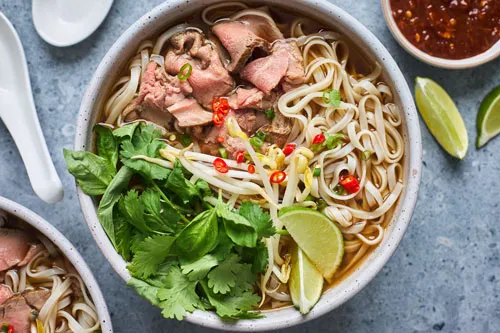

Pho bò is a traditional Vietnamese noodle soup made with a rich, slow-simmered beef broth, flat rice noodles, and thinly sliced cuts of beef. It's typically served steaming hot and topped with fresh herbs like Thai basil, cilantro, and green onions, along with bean sprouts, lime wedges, and chili for extra flavor. The dish is known not just for its comforting taste, but also for its balance of savory, sweet, and aromatic elements. Whether enjoyed at a street stall in Hanoi or homemade in a quiet kitchen, pho bò is a beloved staple that warms both the stomach and the soul.